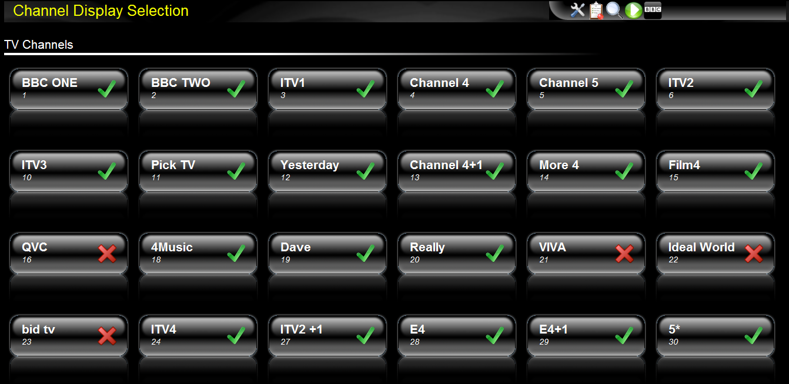

Click the "channels" icon in the toolbar to bring up the list of channels window.
The channels list allows you to manage which of all the available channels are displayed in the listings. The display is split into a section for TV and a section for radio.
To prevent the channel from being displayed, clicked on the tick icon to change it to a cross. When you switch back to the EPG page the channel will no longer be shown.
Note that, even though a channel is not shown, any scheduled recordings for that channel will be unaffected.